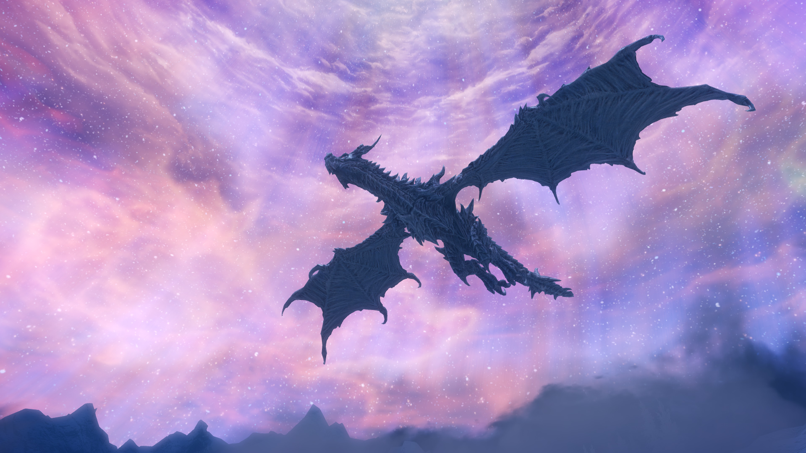
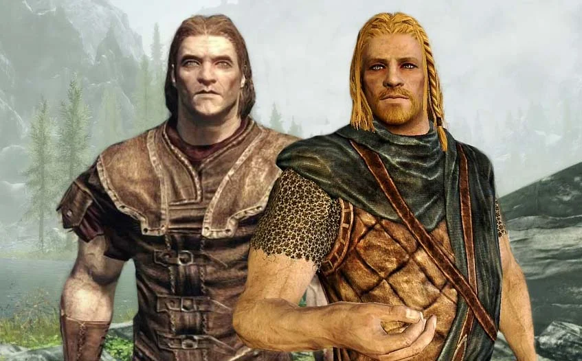
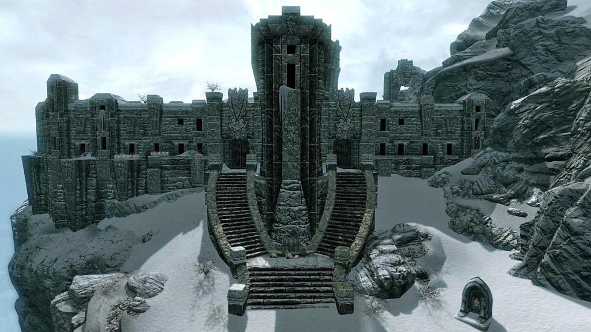
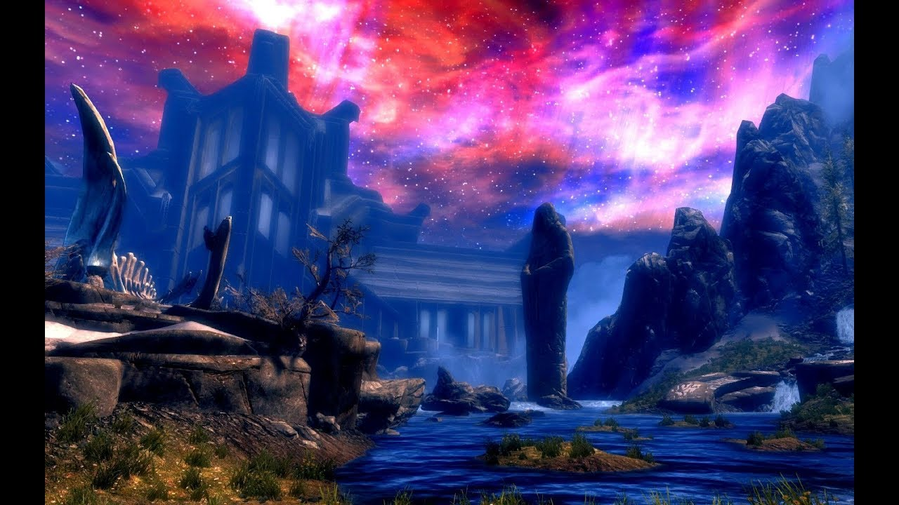

|
|
The Elder Scrolls V SkyrimTESThe Elder Scrolls V: Skyrim (дословно с англ. — «Древние свитки 5: Скайрим») — мультиплатформенная компьютерная ролевая игра с открытым миром, разработанная студией Bethesda Game Studios и выпущенная компанией Bethesda Softworks. Это пятая часть в серии The Elder Scrolls. СЮЖЕТСобытия игры происходят спустя 200 лет после событий Oblivion[19] в 201 году 4-й эры. Великая война между Империей и Альдмерским Доминионом закончилась 30 лет назад унизительным Конкордатом Белого Золота, ущемлявшим множество прав жителей Империи, в том числе и поклонение богу Талосу (Тайберу Септиму). Группировка националистически настроенных нордов, известных как «Братья Бури», во главе с ветераном войны Ульфриком Буревестником, ярлом Виндхельма, устраивает мятеж против власти Империи, вследствие чего в Скайриме начинается гражданская война. Дабы заявить о себе всему Скайриму, Ульфрик убивает верховного короля провинции Торуга с помощью практически легендарного драконьего Крика, но вскоре попадает в засаду имперцев. Между тем, никто даже не догадывается о гораздо более древней опасности, ожидающей всех впереди. Вместе с Ульфриком и другими мятежниками прихваченного по случайности протагониста (пол, расу и внешность в нужный сюжетный момент выбирает и настраивает сам игрок) везут на казнь в крепость Хелген на юге Скайрима. В последнюю секунду перед исполнением приговора на крепость нападает дракон Алдуин, главный антагонист игры, который начинает беспорядочно жечь поселение и убивать жителей. Протагонист сначала следует за мятежником Ралофом, который беседовал с ним в самом начале, затем оказывается, что Ралоф довольно близко, но неприязненно знаком с одним из имперских офицеров, нордом-односельчанином Хадваром. Тут же вмешавшийся дракон заставляет их спрятаться в разных воротах Хелгенской крепости, и перед протагонистом возникает сюжетная развилка — либо бежать из Хелгена с Ралофом (Братья Бури) либо с Хадваром (Империя), за что будет получен более высокий авторитет у соответствующей фракции. Независимо от того, с кем бежал герой, он получает задание — рассказать Балгруфу Старшему, ярлу города Вайтрана, о драконе. Ярл посылает героя к придворному магу Фаренгару, так как тот занимается изучением драконов, и маг просит принести Драконий Камень из нордских руин Ветреного Пика. Там герой узнаёт первое Слово Силы — «Фус» («Сила»). После возвращения в Вайтран герою становится ясно, что на его окрестности напал дракон по имени Мирмулнир, и теперь ему при поддержке отряда городской стражи нужно попытаться убить его. Дракон убит, однако после приближения к трупу существа, герою от него переходит некая светящаяся субстанция. Стражник, помогавший убить дракона, рассказывает, что в древности были особенные люди, «Драконорождённые» или, на языке драконов, Доваки́ны, которые могли поглощать души драконов и без предварительной подготовки использовать т.н. Крики, древнюю форму голосовой магии. Это же и произошло с героем. Он пробует прокричать изученное слово Силы и подтверждает своё происхождение. Стражники говорят, что нужно сообщить об этом ярлу. По пути в город с близлежащего горного пика Высокий Хротгар на весь Скайрим раздаётся страшный грохот и некто по слогам громогласно произносит «До-ва-кин». Так Седобородые, древний орден монахов-отшельников Скайрима, призывают Драконорождённого в свою горную обитель. После того как герой сообщает Балгруфу об убийстве дракона, он отправляется на Высокий Хротгар. Там Седобородые обучают его двум драконьим словам — одно дополняет самый первый Крик, а второе принадлежит новому Крику. Затем они отправляют его на последнее испытание в Устенгрев, руины древнего нордского города, отыскать и забрать реликвию — Рог Юргена Призывателя Ветра, однако, добравшись до места, Довакин вместо артефакта находит лишь записку. В ней сказано, что некий «друг» хочет встретиться с ним в таверне «Спящий Великан» в деревушке Ривервуд, в комнате на чердаке. Дельфина, хозяйка таверны, говорит, что у них нет чердака, но есть одна свободная комната. Сняв её, Драконорожденный ждёт «друга», которым оказывается сама Дельфина. Хозяйка таверны отдаёт Довакину артефакт и сообщает, что драконы никуда не пропали — они оживают. Затем она просит Довакина пойти с ней в поселение Роща Кин, так как, по её сведениям, там скоро должен ожить ещё один дракон. Дельфина и Довакин приходят как раз к воскрешению дракона. Как оказывается, давно умерших и погребённых драконов оживляет Алдуин («Пожиратель Мира») — тот самый дракон, который напал на Хелген. Согласно пророчеству, Алдуин уничтожит весь Нирн, и только Довакин сможет его остановить. Дракона Салокнира, которого оживил Алдуин, удаётся убить, и теперь Дельфина верит, что герой — Драконорождённый. Также она сообщает, что принадлежит к древнему ордену Клинков и думает, что Талмор (правящая политическая партия Альдмерского Доминиона) либо причастна к возвращению драконов, либо как минимум обладает информацией об этом. Довакин проникает в Талморское посольство и находит всю информацию, однако альтмеры ничего не знают, а также они ищут некоего Эсберна. Эсберн, который в своё время был архивариусом Клинков, прячется в южном городе Рифтене. Герой находит его и приводит его к Дельфине. Эсберн подсказывает героям: для того, чтобы понять, как одолеть Алдуина, нужно посетить Храм Небесной Гавани — старинную цитадель ордена Драконьей стражи на северо-западе Скайрима. Герои отправляются туда и находят Стену Алдуина. На ней изображено, как древние герои используют специальный Крик — «Драконобой», с помощью которого можно победить Алдуина. Драконорождённый снова отправляется к Седобородым, но оказывается, что они не знают этого Крика. Они говорят, что Партурнакс, их предводитель, который живёт на вершине пика — Глотке Мира, должен знать Драконобой. Партурнакс оказывается драконом, младшим братом Алдуина. Но он тоже не знает «Драконобоя». Тем не менее он говорит, что на Глотке Мира существует некий Временной разрыв, ведь когда-то древние герои во время битвы с Алдуином использовали Древний свиток и изгнали Алдуина из того времени. Попав в прошлое, можно будет увидеть славную битву и изучить Крик, остаётся лишь раздобыть сам Древний свиток. С помощью библиотекаря Коллегии Винтерхолда Урага гро-Шуба и безумного учёного Септимия Сегония Довакин находит Древний свиток и использует его на месте Временного разрыва. Драконорождённый видит прошлое и изучает таким образом нужный Крик у его же создателей. Затем на Глотку Мира прибывает сам Алдуин. Завязывается схватка, Довакин почти одерживает верх, но раненый дракон решает отступить в потусторонний мир — Совнгард (план богов, куда попадают норды после смерти), чтобы поглотить больше душ и восстановить силы. Для того чтобы узнать, как туда попасть, герои решают попытаться поймать одного из союзников Алдуина для допроса. Герой просит помощи у ярла Балгруфа (или Вигнара Серая Грива, если протагонист помог одержать победу в гражданской войне Братьям Бури), но тот противится — он не может заняться поимкой дракона, пока идёт гражданская война между Империей и Братьями Бури. Главному герою предстоит решить эту проблему — либо устроив мирные переговоры, либо примкнув к одной из сторон конфликта и одержав победу в войне. После этого Балгруф помогает поймать дракона по имени Одавинг — правое крыло Алдуина, который должен знать, как попасть в Совнгард. Пленённому Одавингу приходится выдать местоположение портала в Совнгард и отвезти туда Довакина. Попав через портал в Совнгард, Драконорождённый проходит к его главному чертогу — Залу бога Шора, где пируют павшие в битвах древние герои. Вместе с ними он разгоняет туман, навеянный Алдуином. Затем появляется сам дракон, и Довакину удаётся победить его. Душу Пожирателя миров поглотить не получается, так как тело дракона взрывается и полностью исчезает. Наконец Тсун (оруженосец и сын Шора (Лорхана)) — Страж Зала Шора — возвращает Драконорождённого обратно в Скайрим и учит его Крику, который позволяет в случае надобности призвать одного из героев Совнгарда.  |